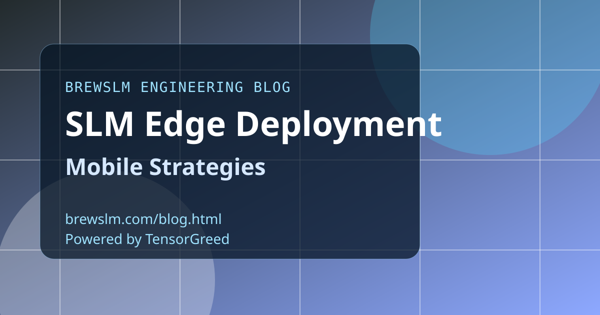

Choose model size by device class
Map device tiers to parameter and memory budgets before model selection. A model that fits high-end devices may fail across your full user population. Deployment strategy should optimize for the median device, not only benchmark hardware.
Quantize with task-aware validation
Quantization can preserve throughput while harming specific task behaviors. Validate against task-specific gold sets after every quantization step. Speed gains are only valuable when user-visible quality remains stable.
Design for intermittent connectivity
Edge systems should define fallback behavior when network retrieval is unavailable. Keep critical logic local and make degraded-mode responses predictable. Reliability under weak connectivity is a core product requirement in many mobile contexts.
Use phased rollout with telemetry feedback
Start with internal cohorts, then controlled user slices, then wider traffic. Track latency, crash behavior, and quality regressions by device tier. Phase-based rollout protects users while giving engineers rapid, actionable feedback.